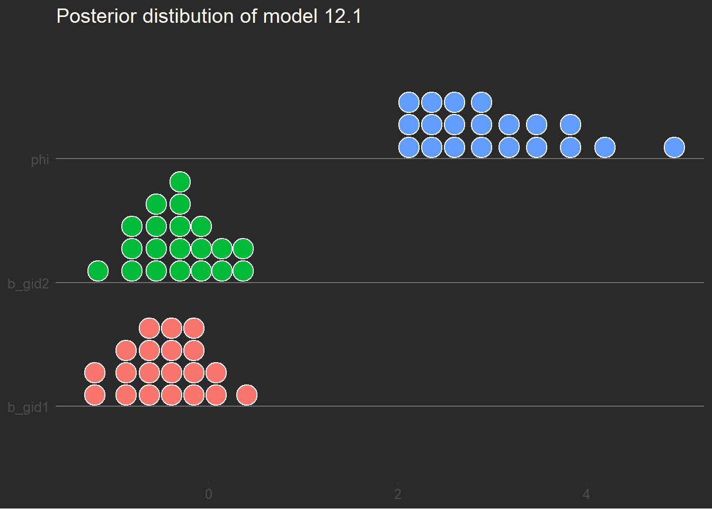

# For execution on a local, multicore CPU with excess RAM
options(mc.cores = parallel::detectCores())
# To avoid recompilation of unchanged Stan programs
rstan_options(auto_write = TRUE)12 Monsters and Mixtures
Some options to facilitate the computations
The default theme used by ggplot2
theme_set(
ggthemes::theme_hc(base_size = 12, base_family = "sans", style = "darkunica") +
theme(title = element_text(color = "floralwhite"),
axis.title.y = element_text(angle = 90),
strip.background = element_rect(fill = "darkgrey")))12.1 Over-dispersed outcomes
12.1.1 Beta-binomial
12.1.1.1 Beta-binomial distribution
The beta distribution is
\[ \mathcal{Beta}(x|\alpha, \beta) = \frac{\Gamma(\alpha+\beta)}{\Gamma(\alpha)\Gamma(\beta)} x^{\alpha -1} (1-x)^{\beta -1} = \frac{1}{B(\alpha, \beta)} x^{\alpha -1} (1-x)^{\beta -1}, 0 \leq x \leq 1 \]
which is not the format used by McElreath. He uses the following shape parameters which are easier (personal opinion) to understand as \(\mu\) is the average of the distribution and \(\kappa\) is the spread.
\[ \begin{align*} \mu &= \bar{p} = \frac{\alpha}{\alpha + \beta} \\ \kappa &= \theta = \alpha + \beta \end{align*} \]
The beta-binomial distribution in brms is defined with brms::dbeta_binomial. This distribution uses the parameters \(\mu\) and \(\phi\). Now this is confusing because \(\mu\) and \(\phi\) are actually respectively the beta distribution’s \(\alpha\) and \(\beta\) mentioned above.
So from now on we use the following parameters with the beta-binomial distribution from brms
\[ \begin{align*} \mu \:\text{parameter in brms:} \:\: \alpha &= \mu \cdot \kappa \\ \phi \: \text{phi parameter in brms:} \:\:\beta &= (1-\alpha) \cdot \kappa \end{align*} \]
the simstudy package provide the function to perform that conversion from \(mean = \mu\) and \(precision = \kappa\) to the shape(mathematical) parameters \(\alpha\) and \(\beta\)
paramsMeanKappa <- list(mean = 0.5, kappa = 5)
paramsShape <- with(paramsMeanKappa, simstudy::betaGetShapes(mean, kappa))
stopifnot(paramsShape$shape1 == paramsMeanKappa$mean * paramsMeanKappa$kappa,
paramsShape$shape2 == (1 - paramsMeanKappa$mean) * paramsMeanKappa$kappa)Variations of the beta distribution using different parameter values can be illustrated as follows
plotBeta <- list()
plotBeta <- within(plotBeta, {
df <- crossing(pbar = c(0.25, 0.5, 0.75), theta = c(5, 15, 30)) %>%
expand(nesting(pbar, theta),
x = seq(from = 0, to = 1, length.out = 100)) %>%
mutate(shape1 = betaGetShapes(pbar, theta)$shape1,
shape2 = betaGetShapes(pbar, theta)$shape2) %>%
mutate(density = dbeta(x, shape1, shape2),
mu = paste("mu", pbar, sep = "=="),
kappa = paste("kappa", theta, sep = "=="))
p <- ggplot(data = df, aes(x = x, y = density)) +
geom_area(fill = "darkorchid1") +
scale_y_continuous(NULL, labels = NULL) +
theme(axis.ticks.y = element_blank()) +
facet_grid(kappa~mu, labeller = label_parsed) +
labs(title = "Beta can take many shapes", x = "parameter space")
})
plotBeta$p12.1.1.2 Beta-binomial model
The data used is
data(UCBadmit)
dataAdmit <- UCBadmit %>%
mutate(gid = ifelse(applicant.gender == "male", "1", "2"))
rm(UCBadmit)
# glimpse(dataAdmit)There is an error in the model defined by McElrath, to concur with his code at 11.26, the model is
\[ \begin{align*} admit_i &\sim \mathcal{BetaBinomial}(N_i, \bar{p}_i, \phi) \\ logit(\bar{p}_i) &= \alpha_{gid[i]} \\ \alpha &\sim \mathcal{N}(0, 1.5) \\ \phi &\sim \mathcal{Exponential}(1) \end{align*} \]
We can fit the model in 2 ways with brms: With the beta_binomilal family or with a custom family called beta_binomial2() as explained by burkner. The family beta_binomial and beta_binomila2 give the same results! So we use brms::beta_binomilal
brms::brmsfamily("beta_binomial")
Family: beta_binomial
Link function: logit tictoc::tic(msg = sprintf("run time of %s, use the cache.", "60 secs."))
fit12_01 <- xfun::cache_rds({
brm(
data = dataAdmit,
family = beta_binomial,
admit | trials(applications) ~ 0 + gid,
prior = c(prior(normal(0, 1.5), class = b),
prior(exponential(1), class = phi, lb = 2)),
iter = 1000, warmup = 500, chains = 2,
cores = detectCores(), seed = 1201)},
file = "ch12_fit12_01")
tictoc::toc()run time of 60 secs., use the cache.: 0.13 sec elapsedfit12_01 Family: beta_binomial
Links: mu = logit; phi = identity
Formula: admit | trials(applications) ~ 0 + gid
Data: dataAdmit (Number of observations: 12)
Draws: 2 chains, each with iter = 1000; warmup = 500; thin = 1;
total post-warmup draws = 1000
Population-Level Effects:
Estimate Est.Error l-95% CI u-95% CI Rhat Bulk_ESS Tail_ESS
gid1 -0.46 0.44 -1.30 0.40 1.00 907 520
gid2 -0.33 0.42 -1.17 0.47 1.00 802 640
Family Specific Parameters:
Estimate Est.Error l-95% CI u-95% CI Rhat Bulk_ESS Tail_ESS
phi 3.00 0.76 2.05 4.93 1.00 406 219
Draws were sampled using sampling(NUTS). For each parameter, Bulk_ESS
and Tail_ESS are effective sample size measures, and Rhat is the potential
scale reduction factor on split chains (at convergence, Rhat = 1).
Note
Did you notice lb = 2 in prior(exponential(1), ...)? Since McElreath wanted the lower bound to 2, we will use lb = 2.
See also McElreath explanation of 2 in section 12.1.1 just before R code 12.1 on p. 371.
and the posterior data which represents the distribution rather than the data
gather_rvars(fit12_01, b_gid1, b_gid2, phi) |>
ggplot(aes(xdist = .value, y = .variable, fill = .variable)) +
stat_dots(color = "white", quantiles = 20) +
theme(legend.position = "none") +
labs(title = "Posterior distibution of model 12.1",
x = NULL, y = NULL)
To do figure 12.1 a) which represents the posterior distribution of the rate of admission of female applicant, that is the posterior beta distribution
plot12_01_post <- list()
plot12_01_post <- within(plot12_01_post, {
post_df <- spread_draws(fit12_01, b_gid1, b_gid2, phi) |>
mutate(p1 = inv_logit_scaled(b_gid1),
p2 = inv_logit_scaled(b_gid2),
ndraws = 100)
set.seed(1201)
sample_df <- post_df |>
slice_sample(n = 20) |>
select(.draw, p1, p2, phi)
# x values used to create the data.frame
the_x = seq(from = 0, to = 1, by = 0.01)
beta_df <- purrr::map2_dfr(.x = sample_df$p2, .y = sample_df$phi, .f = function(mu, kappa) {
shapes = simstudy::betaGetShapes(mean = mu, precision = kappa)
shape1 = shapes$shape1
shape1 = shapes$shape1
data.frame(x = the_x,
y = dbeta(x = the_x, shape1 = shapes$shape1, shape2 = shapes$shape2),
p2 = mu,
phi = kappa)
}, .id = "id")
# beta_df
mean_shapes <- simstudy::betaGetShapes(
mean = mean(beta_df$p2),
precision = mean(beta_df$phi))
beta_mean_df <- data.frame(
x = the_x) |>
mutate(
y = dbeta(x, shape1 = mean_shapes$shape1, shape2 = mean_shapes$shape2))
p <- ggplot(data = beta_df, aes(x = x, y = y, group = id)) +
geom_line(color = "yellow") +
geom_line(data = beta_mean_df, aes(x = x, y = y), inherit.aes = FALSE,
color = "green", linewidth = 2) +
coord_cartesian(ylim = c(0, 3)) +
labs(title = "Distribution of female admission rates",
x = "probability admit", y = "density")
})
plot12_01_post$pand for the posterior validity check
plot12_01_epred <- list()
plot12_01_epred <- within(plot12_01_epred, {
epred <- dataAdmit |>
add_epred_draws(fit12_01, ndraws = 100) |>
mean_qi(.width = 0.89) |>
mutate(p = admit / applications,
p_epred = .epred / applications,
p_lower = .lower / applications,
p_upper = .upper / applications)
p <- ggplot(epred, aes(x = .row, y = p)) +
geom_point(color = "yellow", size = 3) +
geom_pointinterval(aes(x = .row, y = p_epred, ymin = p_lower, ymax = p_upper),
inherit.aes = FALSE, shape = 1, fatten_point = 7, size = 1, color = "green") +
scale_x_continuous(breaks = scales::breaks_width(width = 1)) +
scale_y_continuous(breaks = scales::breaks_extended(n = 7),
labels = scales::label_percent()) +
labs(title = "Posterior validity check",
subtitle = "with 89% CI",
x = "case", y = "admission rate")
})
# plot12_01_epred$epred
plot12_01_epred$p12.1.2 Negative-binomial or gamma-Poisson
Important
You absolutely need to look at the Poisson-lognormal mixture in Kurtz’s blog Kurtz lognormal.
12.1.2.1 Gamma-Poisson distribution shape
In terms of the shape \(\alpha\) and rate \(\beta\) the gamma distribution is
\[ \mathcal{Gamma}(y \mid\alpha, \beta) = \frac{\beta^\alpha y^{\alpha-1} e^{-\beta y}}{\Gamma(\alpha)} \]
but the rate \(\beta\) and scale \(\theta\) are the reciprocal of each other. Therefore the gamma distribution can be expressed in terms of shape \(\alpha\) and scale \(\theta\) as
\[ \mathcal{Gamma}(y \mid\alpha, \theta) = \frac{y^{\alpha-1} e^{-\frac{y}{\theta}}}{\theta^\alpha\Gamma(\alpha)} \]
and, also, the gamma distribution can be expressed in terms of mean \(\mu\) and shape \(\alpha\)
\[ \mathcal{Gamma}(y \mid \mu, \alpha) = \frac{(\frac{\alpha}{\mu})^\alpha}{\Gamma(\alpha)} y^{\alpha-1} \exp{(-\frac{\alpha y}{\mu})} \]
To convert from the \(\mu = mean\) and \(\theta = dispersion= \frac{mean^2}{variance}\) to the shape and rate parameters we use the function simstudy::gammaGetShapeRate(). To help us find the mean and dispersion to use with simstudy::gammaGetShapeRate(), the custom function gammaGetMeanDispersion is also defined. It is the inverse of simstudy::gammaGetShapeRate().
# custom function which is the inverse function of gammaGetShapeRate()
gammaGetMeanDispersion <- function(shape, rate) {
stopifnot(shape > 0, rate > 0)
dispersion <- 1 / shape
mean <- shape / rate
list("mean" = mean, "dispersion" = dispersion)
}
# test it
prm <- list()
prm <- within(prm, {
values <- list(mean = 1, dispersion = 10)
# get the shape and rate from the mean and dispersion
sr <- gammaGetShapeRate(mean = values$mean, dispersion = values$dispersion)
# using the inverse should take you back to the mean and dispersion
md <- gammaGetMeanDispersion(shape = sr$shape, rate = sr$shape)
})
# using the inverse should take you back to the mean and dispersion
stopifnot(identical(prm$md, prm$values))In the dgamma the shape parameter influence the rate which is equivalent to Poisson \(\lambda\).
plotGamma <- list()
plotGamma <- within(plotGamma, {
df <- crossing(shape = c(0.5, 1, 2),
rate = c(0.25, 0.5, 1)) |>
expand(nesting(shape, rate),
x = seq(from = 0, to = 5, length.out = 50)) |>
mutate(density = dgamma(x, shape, rate),
shape_lbl = paste("shape", format(shape, nsmall = 2), sep = "=="),
rate_lbl = paste("rate", format(rate, nsmall = 2), sep = "=="))
p <- df |>
ggplot(aes(x = x, y = density)) +
geom_area(fill = "orchid") +
scale_y_continuous(NULL, labels = NULL) +
theme(axis.ticks.y = element_blank()) +
facet_grid(shape_lbl~rate_lbl, labeller = label_parsed) +
labs(title = "Gamma prior with different parameter values",
x = "domain space")
})
plotGamma$pWarning: Removed 3 rows containing non-finite values (`stat_align()`).12.1.2.2 Data
data(Kline)
dataKline <- Kline |>
mutate(log_pop_s = log(population),
log_pop_s = as.vector(scale(log_pop_s)),
cid = factor(contact, levels = c("low", "high")))
rm(Kline)
dataKline |> skim() |>
select(-n_missing, - complete_rate) |>
mutate(across(.cols = where(is.numeric), .fns = round, digits = 1))Warning: There was 1 warning in `mutate()`.
ℹ In argument: `across(.cols = where(is.numeric), .fns = round, digits = 1)`.
Caused by warning:
! The `...` argument of `across()` is deprecated as of dplyr 1.1.0.
Supply arguments directly to `.fns` through an anonymous function instead.
# Previously
across(a:b, mean, na.rm = TRUE)
# Now
across(a:b, \(x) mean(x, na.rm = TRUE))| Name | dataKline |
| Number of rows | 10 |
| Number of columns | 7 |
| _______________________ | |
| Column type frequency: | |
| factor | 3 |
| numeric | 4 |
| ________________________ | |
| Group variables | None |
Variable type: factor
| skim_variable | ordered | n_unique | top_counts |
|---|---|---|---|
| culture | FALSE | 10 | Chu: 1, Haw: 1, Lau: 1, Mal: 1 |
| contact | FALSE | 2 | hig: 5, low: 5 |
| cid | FALSE | 2 | low: 5, hig: 5 |
Variable type: numeric
| skim_variable | mean | sd | p0 | p25 | p50 | p75 | p100 | hist |
|---|---|---|---|---|---|---|---|---|
| population | 34109.1 | 84793.0 | 1100.0 | 3897.8 | 7700.0 | 12050.0 | 275000.0 | ▇▁▁▁▁ |
| total_tools | 34.8 | 17.8 | 13.0 | 22.5 | 30.5 | 42.2 | 71.0 | ▇▃▃▂▂ |
| mean_TU | 4.8 | 1.1 | 3.2 | 4.0 | 4.8 | 5.3 | 6.6 | ▅▅▇▂▅ |
| log_pop_s | 0.0 | 1.0 | -1.3 | -0.5 | 0.0 | 0.3 | 2.3 | ▃▇▃▁▂ |
Null model
Note
This section is important as it serves to evaluate the prior to use for the full model. See how Kurz (2020) does it. My work below does not show everything (yet).
Start with the null model, or as Kurtz calls it, the intercept-only model.
\[ \begin{align*} total\_tools_i &\sim \mathcal{GammaPoisson}(\mu, \alpha) \\ log(\mu) &= \beta_0 \\ \beta_0 &\sim \mathcal{Normal}(3, 0.5) \\ \alpha &\sim \mathcal{Gamma}(0.01,0.01) \end{align*} \]
tictoc::tic(msg = sprintf("run time of %s, use the cache.", "60 secs."))
fit12_02a <- xfun::cache_rds({
out <- brm(data = dataKline,
family = negbinomial,
total_tools ~ 1,
prior = c(prior(normal(3, 0.5), class = Intercept), # beta_0
prior(gamma(0.01, 0.01), class = shape)), # alpha
iter = 1000, warmup = 500, chains = 2,
cores = detectCores(), seed = 1213)
out <- brms::add_criterion(out, criterion = c("waic", "loo"))
out},
file = "ch12_fit12_02a")
tictoc::toc()run time of 60 secs., use the cache.: 0.15 sec elapsedfit12_02a Family: negbinomial
Links: mu = log; shape = identity
Formula: total_tools ~ 1
Data: dataKline (Number of observations: 10)
Draws: 2 chains, each with iter = 1000; warmup = 500; thin = 1;
total post-warmup draws = 1000
Population-Level Effects:
Estimate Est.Error l-95% CI u-95% CI Rhat Bulk_ESS Tail_ESS
Intercept 3.50 0.17 3.14 3.84 1.00 548 510
Family Specific Parameters:
Estimate Est.Error l-95% CI u-95% CI Rhat Bulk_ESS Tail_ESS
shape 4.89 2.86 1.31 11.92 1.00 450 526
Draws were sampled using sampling(NUTS). For each parameter, Bulk_ESS
and Tail_ESS are effective sample size measures, and Rhat is the potential
scale reduction factor on split chains (at convergence, Rhat = 1).and the estimated parameters of the \(mean\) and \(dispersion\) can be converted to the \(shape\) and \(rate\) parameters using \(simstudy::gammaGetShapeRate()\)
m <- posterior_summary(fit12_02a)["b_Intercept", "Estimate"]
d <- posterior_summary(fit12_02a)["shape", "Estimate"]
simstudy::gammaGetShapeRate(mean = m, dispersion = d)$shape
[1] 0.2046598
$rate
[1] 0.05849846Because the model has only the intercept and no predictor, there is only one value for the Intercept which is the mean of the 10 Poisson rates \(\lambda_i, i =1,...10\).
The \(alpha\) is simply the \(shape\) parameter of gamma … and does not really describe anything. It is really used to define the shape of the distribution.
And the prediction plots show that the distributions using the same rate and shape for the gamma hyperparameters.
plot12_02a_pred <- list()
plot12_02a_pred <- within(plot12_02a_pred, {
df <- dataKline |>
add_predicted_draws(fit12_02a, ndraws = 100)
p <- df |>
ggplot(aes(x = .prediction, color = culture)) +
geom_density(size = 1) +
scale_y_continuous(NULL, labels = NULL) +
scale_color_paletteer_d("khroma::soil") +
theme(axis.text.x = element_text(size = rel(0.8)),
axis.ticks.y = element_blank(),
legend.position = "none") +
facet_wrap(. ~ culture, nrow = 4) +
labs(title = "Predictive distributions",
subtitle = sprintf("Gamma hyperparameters: mean = %0.2f and dispersion = %0.2f",
posterior_summary(fit12_02a)["b_Intercept", "Estimate"],
posterior_summary(fit12_02a)["shape", "Estimate"]),
x = "total tools")
})Warning: Using `size` aesthetic for lines was deprecated in ggplot2 3.4.0.
ℹ Please use `linewidth` instead.plot12_02a_pred$pand we can also visualize the distributions of our \(rate\) and \(shape\) parameters
plot12_02a_post <- list()
plot12_02a_post <- within(plot12_02a_post, {
df <- gather_draws(fit12_02a, b_Intercept, shape, ndraws = 100) |>
mutate(.variable = if_else(.variable == "b_Intercept", "mean", "dispersion"))
p <- df |>
ggplot(aes(.value, fill = .variable, color = .variable)) +
stat_density(geom = "area") +
scale_y_continuous(NULL, labels = NULL) +
scale_fill_paletteer_d("fishualize::Scarus_quoyi") +
scale_color_paletteer_d("fishualize::Scarus_quoyi") +
theme(axis.text.x = element_text(size = rel(0.8)),
axis.ticks.y = element_blank(),
legend.position = "none") +
labs(title = "Posterior distributions of rate and shape",
x = NULL) +
facet_wrap(. ~ .variable, scales = "free_y")
})
plot12_02a_post$pFull model
\[ \begin{align*} total\_tools_i &\sim \mathcal{GammaPoisson}(\mu_i, \alpha) \\ log(\mu) &= \frac{\exp{(\beta_{0,cid[i]})} \cdot population_i^{\beta_{1,cid[i]}}}{\gamma} \\ \beta_{0,j} &\sim \mathcal{Normal}(1, 1) \\ \beta_{1,j} &\sim \mathcal{Exponential}(1) \\ \gamma &\sim \mathcal{Exponential}(1) \\ \alpha &\sim \mathcal{Exponential}(1) \end{align*} \]
tictoc::tic(msg = sprintf("run time of %s, use the cache.", "30 secs."))
fit12_02b <- xfun::cache_rds({
# we have to be careful when using waic with gamma-Poisson
# but in this case we do it. We use t in the plot.
out <- brm(data = dataKline,
family = negbinomial(link = "identity"),
bf(total_tools ~ exp(b0) * population^b1 / g,
b0 + b1 ~ 0 + cid,
g ~ 1,
nl = TRUE),
prior = c(prior(normal(1, 1), nlpar = b0),
prior(exponential(1), nlpar = b1, lb = 0),
prior(exponential(1), nlpar = g, lb = 0),
prior(exponential(1), class = shape)),
iter = 1000, warmup = 500, chains = 2,
cores = detectCores(), seed = 1213,
control = list(adapt_delta = .95))
out <- brms::add_criterion(out, criterion = c("waic", "loo"))
out},
file = "ch12_fit12_02b")
tictoc::toc()run time of 30 secs., use the cache.: 0.16 sec elapsedfit12_02b Family: negbinomial
Links: mu = identity; shape = identity
Formula: total_tools ~ exp(b0) * population^b1/g
b0 ~ 0 + cid
b1 ~ 0 + cid
g ~ 1
Data: dataKline (Number of observations: 10)
Draws: 2 chains, each with iter = 1000; warmup = 500; thin = 1;
total post-warmup draws = 1000
Population-Level Effects:
Estimate Est.Error l-95% CI u-95% CI Rhat Bulk_ESS Tail_ESS
b0_cidlow 0.90 0.85 -0.81 2.57 1.01 470 382
b0_cidhigh 0.99 0.95 -0.77 2.74 1.00 682 588
b1_cidlow 0.25 0.10 0.07 0.44 1.00 379 215
b1_cidhigh 0.27 0.13 0.04 0.52 1.00 539 365
g_Intercept 1.09 0.90 0.12 3.58 1.00 498 553
Family Specific Parameters:
Estimate Est.Error l-95% CI u-95% CI Rhat Bulk_ESS Tail_ESS
shape 3.68 1.68 1.27 7.73 1.00 706 634
Draws were sampled using sampling(NUTS). For each parameter, Bulk_ESS
and Tail_ESS are effective sample size measures, and Rhat is the potential
scale reduction factor on split chains (at convergence, Rhat = 1).add the pareto k for use in the plot later
# append k value to data
dataKline <- dataKline |>
mutate(ParetoK = fit12_02b$criteria$loo$diagnostics$pareto_k)
stopifnot(!any(is.na(dataKline)))
dataKline |>
select(culture, ParetoK) |>
arrange(desc(ParetoK)) culture ParetoK
1 Tonga 0.55416839
2 Hawaii 0.47255206
3 Tikopia 0.36713198
4 Malekula 0.35588800
5 Chuuk 0.29056316
6 Lau Fiji 0.28858412
7 Yap 0.14289746
8 Manus 0.11435387
9 Trobriand 0.08526092
10 Santa Cruz 0.07786319and the fitted values are
epred12_02b <- list()
epred12_02b <- within(epred12_02b, {
df <- dataKline |>
distinct(cid, culture) |>
expand(nesting(cid, culture),
population = seq_range(dataKline$population, n = 20, pretty = TRUE)) |>
add_epred_draws(fit12_02b, ndraws = 100) |>
ggdist::mean_qi(.width = 0.89)
p <- ggplot(dataKline,
aes(x = population, y = total_tools, color = cid, size = ParetoK)) +
geom_smooth(df,
mapping = aes(x = population, y = .epred, ymin = .lower,
ymax = .upper, fill = cid, color = cid),
inherit.aes = FALSE, stat = "identity") +
geom_point(show.legend = FALSE) +
ggrepel::geom_text_repel(aes(label = culture), size = 3) +
scale_x_continuous(breaks = scales::breaks_extended(n = 5),
labels = scales::label_number(scale = 0.001)) +
scale_color_paletteer_d("khroma::light") +
scale_fill_paletteer_d("khroma::light") +
scale_size_continuous() +
theme(legend.position = c(0.2, 0.85)) +
labs(title = "Fitted values with the gamma-Poisson model",
subtitle = "model 12.2b",
x = "population in thousands")
})
# epred12_02b$df
epred12_02b$pthe main difference now is that since we use predictor \(cid\) then the parameter \(rate = b_0\) of the gamma distribution used to determined the \(\lambda_i\) is allowed to vary by \(cid\). Therefore we have different possible distribution by \(cid\) and can change the distribution by culture as follows.
pred12_02b <- list()
pred12_02b <- within(pred12_02b, {
df <- dataKline |>
distinct(cid, culture) |>
expand(nesting(cid, culture),
population = seq_range(dataKline$population, n = 20, pretty = TRUE)) |>
add_predicted_draws(fit12_02b, ndraws = 100)
p <- df |>
ggplot(aes(x = .prediction, color = cid, fill = cid)) +
geom_density() +
scale_color_paletteer_d("khroma::light") +
scale_fill_paletteer_d("khroma::light") +
coord_cartesian(xlim = c(0, 200)) +
theme(axis.text.x = element_text(size = 8),
axis.text.y = element_blank(),
axis.ticks.y = element_blank()) +
labs(title = "Predictive distributions by culture colored by cid",
subtitle = "model 12.2b", x = "total tools", y = NULL) +
facet_wrap(. ~ culture)
})
pred12_02b$pPoisson-lognormal
Tip
This is an extra section. The result is so useful it is worth adding here. See Kurtz lognormal.
12.2 Zero-inflated outcomes
Tip
Make sure you read this section in Kurz (2020). It is loaded with very useful informations. Especially when using brms.
12.2.1 Zero-inflated Poisson
This type of model is called a hurdle model in the literature. This type of model has served me very well in the context of business.
With zero-inflated Poisson both parameters \(p\) and \(\lambda\) can have their own equation.
\[ \begin{align*} prod_i &\sim \mathcal{ZIPoisson}(p_i, \lambda_i) \\ logit(p_i) &= \alpha_p + \beta_p x_i \\ log(\lambda_i) &= \alpha_\lambda + \beta_\lambda x_i \\ \end{align*} \]
We use simstudy to simulate this.
simMonastery <- list()
simMonastery <- within(simMonastery, {
defs <- defData(varname = "drink", dist = "categorical", formula = "0.8;0.2")
defs <- defData(defs, varname = "work", dist = "poisson", formula = 1)
defs <- defData(defs, varname = "output", dist = "nonrandom",
formula ="(2 - drink) * work")
data <- genData(n = 365, dtDefs = defs)
data <- genFactor(data, varname = "drink", labels = c("drinkNot", "drink")) |>
as.data.frame()
})plot the data
simMonastery$data |>
ggplot(aes(x = output)) +
geom_histogram(aes(fill = fdrink), binwidth = 1) +
scale_fill_paletteer_d("khroma::vibrant") +
stat_bin(aes(y = after_stat(count), label = ifelse(after_stat(count), after_stat(count), "")),
geom = "text", bins = 30, color = "ghostwhite", vjust = -0.5) +
theme(legend.position = c(0.8, 0.8),
legend.title = element_blank(),
axis.ticks.y = element_blank(),
axis.text.y = element_blank()) +
labs(title = "Frequency of monastery's output",
subtitle = sprintf("output for %d days", nrow(simMonastery$data)),
y = "nb of days")12.2.1.1 Model and fit
\[ \begin{align*} prod_i &\sim \mathcal{ZIPoisson}(p, \lambda) \\ logit(p) &= \alpha_p \\ log(\lambda) &= \alpha_\lambda \\ \alpha_p &\sim \mathcal{Beta}(2, 6) \\ \alpha_\lambda &\sim \mathcal{N}(1, 0.5) \end{align*} \]
In brms, \(p_i\) is denoted zi. To use a non-default prior for zi, make sure to indicate class = zi. Important to read Kurz (2020).
tictoc::tic(msg = sprintf("run time of %s, use the cache.", "65 secs."))
fit12_03 <- xfun::cache_rds({
out <- brm(data = simMonastery$data,
family = zero_inflated_poisson,
output ~ 1,
prior = c(prior(normal(1, 0.5), class = Intercept),
prior(beta(2, 6), class = zi)), # the brms default is beta(1, 1)
iter = 1000, warmup = 500, chains = 2,
cores = detectCores(), seed = 1217)
brms::add_criterion(out, criterion = c("waic", "loo"))},
file = "ch12_fit12_03")
tictoc::toc()run time of 65 secs., use the cache.: 0.17 sec elapsedand we generate a summary with posterior::summarize_draws
summ_fit12_03 <- list()
summ_fit12_03 <- within(summ_fit12_03, {
data <- as_draws(fit12_03) |>
mutate_variables(lambda = exp(b_Intercept))
stats <- data |>
summarize_draws() |>
filter(variable != "lp__") |>
mutate(across(.cols = where(is.numeric), round, digits = 2))
})
summ_fit12_03$stats# A tibble: 4 × 10
variable mean median sd mad q5 q95 rhat ess_bulk ess_tail
<chr> <num> <num> <num> <num> <num> <num> <num> <num> <num>
1 b_Intercept -0.16 -0.16 0.09 0.09 -0.31 -0.01 1.01 301. 345.
2 zi 0.18 0.18 0.06 0.06 0.08 0.27 1.01 360. 486.
3 lprior -1.96 -1.9 0.43 0.38 -2.81 -1.34 1.01 313. 450.
4 lambda 0.86 0.86 0.08 0.07 0.74 0.99 1.01 301. 345.The \(b_Intercept\) represents \(\lambda\) on the log scale, because the link function for \(\lambda\). This can be confirmed by looking at the summary which shows Links: mu = log; zi = identity.
We observe that \(lambda\) matches the actual rate of our simulation with defData(defs, varname = "work", dist = "poisson", formula = 1).
When using brms the parameter \(zi\) has link function identity as evidenced in the summary by Links: mu = log; zi = identity. In this case we have obtained \(zi = 0.20\) which is close enough to McEleath’s estimate of 0.23.
We observe that \(zi\) is the actual rate of our simulation with defData(varname = "drink", dist = "categorical", formula = "0.8;0.2").
12.3 Ordered categorical outcomes
12.3.1 Example: Moral intuition
data(Trolley)
dataTrolley <- Trolley |>
mutate(response = factor(response, ordered = TRUE))
rm(Trolley)
dataTrolley |>
skim() |>
select(-n_missing, -complete_rate) |>
mutate(across(.cols = where(is.numeric), .fns = round, digits = 2))| Name | dataTrolley |
| Number of rows | 9930 |
| Number of columns | 12 |
| _______________________ | |
| Column type frequency: | |
| factor | 5 |
| numeric | 7 |
| ________________________ | |
| Group variables | None |
Variable type: factor
| skim_variable | ordered | n_unique | top_counts |
|---|---|---|---|
| case | FALSE | 30 | cfa: 331, cfb: 331, cfr: 331, cib: 331 |
| response | TRUE | 7 | 4: 2323, 5: 1462, 7: 1446, 6: 1445 |
| id | FALSE | 331 | 96;: 30, 96;: 30, 96;: 30, 96;: 30 |
| edu | FALSE | 8 | Bac: 3540, Som: 2460, Mas: 1410, Gra: 1050 |
| story | FALSE | 12 | box: 1324, bur: 1324, spe: 993, swi: 993 |
Variable type: numeric
| skim_variable | mean | sd | p0 | p25 | p50 | p75 | p100 | hist |
|---|---|---|---|---|---|---|---|---|
| order | 16.50 | 9.29 | 1 | 9 | 16.5 | 24 | 32 | ▇▆▇▆▇ |
| age | 37.49 | 14.23 | 10 | 26 | 36.0 | 48 | 72 | ▅▇▇▅▂ |
| male | 0.57 | 0.49 | 0 | 0 | 1.0 | 1 | 1 | ▆▁▁▁▇ |
| action | 0.43 | 0.50 | 0 | 0 | 0.0 | 1 | 1 | ▇▁▁▁▆ |
| intention | 0.47 | 0.50 | 0 | 0 | 0.0 | 1 | 1 | ▇▁▁▁▇ |
| contact | 0.20 | 0.40 | 0 | 0 | 0.0 | 0 | 1 | ▇▁▁▁▂ |
| action2 | 0.63 | 0.48 | 0 | 0 | 1.0 | 1 | 1 | ▅▁▁▁▇ |
12.3.2 Describing and ordered distribution with intercepts
The histogram of response
plotTrolley <- list()
plotTrolley <- within(plotTrolley, {
df <- dataTrolley |>
count(response)
freq <- df |>
ggplot(aes(x = response, y = n, fill = response)) +
geom_bar(stat = "identity") +
scale_fill_paletteer_d("khroma::bright") +
theme(legend.position = "none") +
labs(title = "Histogram of Trolley responses")
})
# plotTrolley$freqThe cumulative proportions plot
plotTrolley <- within(plotTrolley, {
df2 <- dataTrolley |>
count(response) |>
arrange(response) |>
mutate(pct = n / sum(n),
cum_pct = cumsum(pct))
cumfreq <- ggplot(df2, aes(x = as.integer(response), y = cum_pct)) +
geom_line(color = "yellow", size = 1) +
geom_point(color = "orange", size = 2) +
coord_cartesian(ylim = c(0, 1)) +
labs(title = "Cumulative proportions",
x = "response", y = "cumulative probabilities")
})
# plotTrolley$cumfreqAnd the plot of logit
plotTrolley <- within(plotTrolley, {
df3 <- dataTrolley |>
count(response) |>
mutate(pct = n / sum(n),
cum_pct = cumsum(pct),
logit = log(cum_pct / (1 - cum_pct)),
logit_ctr = scale(logit, center = TRUE, scale = FALSE))
center <- df3 |>
ggplot(aes(x = as.integer(response), y = logit)) +
geom_line(color = "pink", size = 1) +
geom_point(color = "violetred", size = 2) +
labs(title = "Log of Cumulative Odds",
y = "log of cumulative odds (centered)")
})
# plotTrolley$centerand the 3 plots in figure 12.4 are
wrap_plots(plotTrolley[c("freq", "cumfreq", "center")]) +
plot_annotation(title = "Figure 12.4")The model is
\[ \begin{align*} response_i &\sim \mathcal{Categorical}(\overrightarrow{p}) \\ logit(p_k) &= \alpha_k - \phi \\ \phi &= 0 \\ \alpha_k &\sim \mathcal{N}(0, 1.5) \end{align*} \]
and the fit with brms
tictoc::tic(msg = sprintf("run time of %s, use the cache.", "5 mins."))
fit12_04 <- xfun::cache_rds({
# define start values
inits <- list(
`Intercept[1]` = -2,
`Intercept[2]` = -1,
`Intercept[3]` = 0,
`Intercept[4]` = 1,
`Intercept[5]` = 2,
`Intercept[6]` = 2.5)
inits_list <- list(inits, inits, inits, inits)
out <- brm(
data = dataTrolley,
family = cumulative,
response ~ 1,
prior = c(
prior(normal(0, 1.5), class = Intercept)),
# the start values
init = inits_list,
iter = 1000, warmup = 500, chains = 2,
cores = detectCores(), seed = 1223)
brms::add_criterion(out, criterion = c("waic", "loo"))},
file = "ch12_fit12_04")
tictoc::toc()run time of 5 mins., use the cache.: 0.18 sec elapsedwhich gives the summary
print(fit12_04) Family: cumulative
Links: mu = logit; disc = identity
Formula: response ~ 1
Data: dataTrolley (Number of observations: 9930)
Draws: 2 chains, each with iter = 1000; warmup = 500; thin = 1;
total post-warmup draws = 1000
Population-Level Effects:
Estimate Est.Error l-95% CI u-95% CI Rhat Bulk_ESS Tail_ESS
Intercept[1] -1.92 0.03 -1.98 -1.86 1.00 664 569
Intercept[2] -1.27 0.02 -1.31 -1.22 1.00 905 854
Intercept[3] -0.72 0.02 -0.76 -0.68 1.00 1033 814
Intercept[4] 0.25 0.02 0.21 0.29 1.00 1120 682
Intercept[5] 0.89 0.02 0.85 0.93 1.00 1180 735
Intercept[6] 1.77 0.03 1.71 1.82 1.00 1239 836
Family Specific Parameters:
Estimate Est.Error l-95% CI u-95% CI Rhat Bulk_ESS Tail_ESS
disc 1.00 0.00 1.00 1.00 NA NA NA
Draws were sampled using sampling(NUTS). For each parameter, Bulk_ESS
and Tail_ESS are effective sample size measures, and Rhat is the potential
scale reduction factor on split chains (at convergence, Rhat = 1).and we convert the intercepts to the normal scale
fit12_04 |>
fixef() |>
brms::inv_logit_scaled() |>
round(digits = 3) Estimate Est.Error Q2.5 Q97.5
Intercept[1] 0.128 0.508 0.122 0.135
Intercept[2] 0.220 0.506 0.212 0.227
Intercept[3] 0.328 0.505 0.318 0.337
Intercept[4] 0.562 0.505 0.552 0.571
Intercept[5] 0.709 0.505 0.700 0.718
Intercept[6] 0.854 0.507 0.847 0.861
Warning
The SD i.e. Est.Error are not valid using the inv_logit_scaled, that is using a direct inverse exp function.
They must be computed using a posterior sample.
summ12_04 <- list()
summ12_04 <- within(summ12_04, {
data <- tidy_draws(fit12_04)
summ <- data |>
select(!matches(match = "__$|disc|lprior|chain|draw|iteration")) |>
mutate(across(.cols = where(is.double), .fns = ~gtools::inv.logit(.))) |>
pivot_longer(cols = everything()) |>
mutate(name = sub(pattern = "^X[[:digit:]][.]b_", replacement = "", x = name),
name = sub(pattern = "[.]$", replacement = "]", x = name),
name = sub(pattern = "[.]", replacement = "[", x = name)) |>
group_by(name) |>
ggdist::mean_qi(.width = 0.89) |>
mutate(across(.cols = where(is.numeric), .fns = round, digits = 3))
})
# glimpse(samples$data)
# glimpse(samples$summ)
summ12_04$summ# A tibble: 6 × 7
name value .lower .upper .width .point .interval
<chr> <dbl> <dbl> <dbl> <dbl> <chr> <chr>
1 b_Intercept[1] 0.128 0.122 0.134 0.89 mean qi
2 b_Intercept[2] 0.22 0.214 0.226 0.89 mean qi
3 b_Intercept[3] 0.328 0.32 0.335 0.89 mean qi
4 b_Intercept[4] 0.562 0.554 0.569 0.89 mean qi
5 b_Intercept[5] 0.709 0.702 0.716 0.89 mean qi
6 b_Intercept[6] 0.854 0.849 0.86 0.89 mean qi and to validate our fit, we see that the \(value\) in the summary is the same as the \(cum_pct\) previously computed.
plotTrolley$df3$cum_pct |>
round(digits = 3)[1] 0.128 0.220 0.328 0.562 0.709 0.854 1.00012.3.3 Adding predictor variables
Note
This form automatically ensure the correct ordering of the outcome values, while still morphing the likelihood of each individual value as the predictor \(x_i\) changes value. Why is the linear model \(\phi\) substracted from each intercept? Because if we decrease the log-cumulative-odds of every outcome value \(k\) below the maximum, this necessarily shifts probability mass upwards towards higher outcome values.
\[ \begin{align*} \log{\left[ \frac{Pr(y_i \le k)}{1-Pr(y_i \le k)} \right]} &= \alpha_k - \phi_i \\ \phi_i &= \beta x_i \end{align*} \]
For example lets take model b12.4
fixef(fit12_04) Estimate Est.Error Q2.5 Q97.5
Intercept[1] -1.9162272 0.03087756 -1.9766096 -1.8578615
Intercept[2] -1.2669664 0.02330554 -1.3149549 -1.2226463
Intercept[3] -0.7186470 0.02152095 -0.7619131 -0.6778996
Intercept[4] 0.2475712 0.01981348 0.2095279 0.2863656
Intercept[5] 0.8902421 0.02184882 0.8484594 0.9335528
Intercept[6] 1.7702158 0.02761296 1.7142981 1.823091012.3.3.1 Logistic / Logit functions
See the appendix A of this book for a detailed treatment of all these functions. They will be added the suffix .new to identify them.
The logistic() and inv_logit() functions are actually the same as stats::plogis().
Also, the function logit() already exists as stats::qlogis().
therefore dordlogit() as given
dordlogit.new <- function(x, phi = 0L, log = FALSE) {
x <- sort(x) # the ordering is important
p <- stats::plogis(q = c(x, Inf), location = phi)
p <- c( p[1], p[2:length(p)] - p[1:(length(p)-1)] )
if (log) p <- log(p)
p
}which gives about the same result as R code 11.9 in McElreath on p. 386 with R code 12.20, and Kurtz.
probk <- dordlogit.new(fixef(fit12_04)[, 1])
round(probk, 2)Intercept[1] Intercept[2] Intercept[3] Intercept[4] Intercept[5] Intercept[6]
0.13 0.09 0.11 0.23 0.15 0.15
0.15 which gives and expected value of
sum(1:7 * probk)[1] 4.19924612.3.3.2 Subtracting from the log-cumulative odds
If we subtract from the log-cumulative odds then we shift the probability mass to higher outcome values.
For example with model b12.4
probk <- dordlogit.new(fixef(fit12_04)[, 1])
round(probk, 2)Intercept[1] Intercept[2] Intercept[3] Intercept[4] Intercept[5] Intercept[6]
0.13 0.09 0.11 0.23 0.15 0.15
0.15 which gives an expected value
sum(1:7 * probk)[1] 4.199246but if we substract 0.5
(dordlogit.new(fixef(fit12_04)[, 1], phi = 0.5))Intercept[1] Intercept[2] Intercept[3] Intercept[4] Intercept[5] Intercept[6]
0.08194363 0.06397636 0.08225465 0.20905114 0.15911520 0.18443871
0.21922031 then we have a higher expected value
sum(dordlogit.new(fixef(fit12_04)[, 1], phi = 0.5) * 1:7)[1] 4.72961512.3.3.3 Ordered categorical with several predictors
Our model with several predictors is
\[ \begin{align*} response_i &\sim Categorical(\overrightarrow{p}) \\ logit(Pr(y_i \leq k)) &= \frac{Pr(y_i \leq k)}{1 - Pr(y_i \leq k)} = \alpha_k - \phi_i \\ \phi_i &= \beta_{action} \cdot action_i + \beta_{intention} \cdot intention_i + \beta_{contact} \cdot contact_i + \beta{a,i} \cdot(action_i \times intention_i) + \beta{c,i} \cdot(contact_i \times intention_i) \\ \alpha_k &\sim \mathcal{N}(0, 1.5) \\ \beta_{\bullet} &\sim \mathcal{N}(0, 0.5) \end{align*} \]
and the fit is
tictoc::tic(msg = sprintf("run time of %s, use the cache.", "6 mins."))
fit12_05 <- xfun::cache_rds({
out <- brms::brm(data = dataTrolley,
family = cumulative,
formula = response ~ 1 + action + intention + contact +
action:intention + contact:intention,
prior = c(prior(normal(0, 1.5), class = Intercept),
prior(normal(0, 0.5), class = b)),
iter = 1000, warmup = 500, chains = 2,
cores = detectCores(), seed = 1229)
brms::add_criterion(out, criterion = c("waic", "loo"))},
file = "ch12_fit12_05")
tictoc::toc()run time of 6 mins., use the cache.: 0.19 sec elapsedfit12_05 Family: cumulative
Links: mu = logit; disc = identity
Formula: response ~ 1 + action + intention + contact + action:intention + contact:intention
Data: dataTrolley (Number of observations: 9930)
Draws: 2 chains, each with iter = 1000; warmup = 500; thin = 1;
total post-warmup draws = 1000
Population-Level Effects:
Estimate Est.Error l-95% CI u-95% CI Rhat Bulk_ESS Tail_ESS
Intercept[1] -2.64 0.05 -2.74 -2.53 1.01 750 594
Intercept[2] -1.94 0.05 -2.03 -1.84 1.01 729 681
Intercept[3] -1.35 0.05 -1.43 -1.25 1.01 756 836
Intercept[4] -0.31 0.04 -0.39 -0.22 1.01 760 853
Intercept[5] 0.36 0.04 0.28 0.45 1.01 744 772
Intercept[6] 1.27 0.05 1.18 1.35 1.01 808 799
action -0.48 0.05 -0.59 -0.37 1.00 807 704
intention -0.29 0.06 -0.41 -0.18 1.00 793 637
contact -0.35 0.07 -0.48 -0.20 1.00 777 748
action:intention -0.43 0.08 -0.58 -0.27 1.00 837 702
intention:contact -1.23 0.10 -1.42 -1.03 1.00 763 683
Family Specific Parameters:
Estimate Est.Error l-95% CI u-95% CI Rhat Bulk_ESS Tail_ESS
disc 1.00 0.00 1.00 1.00 NA NA NA
Draws were sampled using sampling(NUTS). For each parameter, Bulk_ESS
and Tail_ESS are effective sample size measures, and Rhat is the potential
scale reduction factor on split chains (at convergence, Rhat = 1).and plot the coefficients
post12_05 <- gather_draws(model = fit12_05, `b_action.*`, `b_contact.*`, `b_intention.*`,
regex = TRUE)
post12_05 |>
ggplot(aes(x = .value, y = .variable)) +
geom_vline(xintercept = 0, alpha = 1/5, linetype = 3) +
stat_gradientinterval(.width = .5, size = 1, point_size = 3/2, shape = 21,
point_fill = "darkgreen",
fill ="green",
color = "darkgreen") +
scale_x_continuous("marginal posterior", breaks = -5:0 / 4) +
coord_cartesian(xlim = c(-1.4, 0)) +
labs(x = "marginal posterior", y = NULL,
title = "Model b12.5 coefficients")Warning: `fill_type = "gradient"` is not supported by the current graphics device, which
is `"png"`.
ℹ Falling back to `fill_type = "segments"`.
ℹ If you believe your current graphics device does support `fill_type =
"gradient"` but auto-detection failed, try setting `fill_type = "gradient"`
explicitly. If this causes the gradient to display correctly, then this
warning is likely a false positive caused by the graphics device failing to
properly report its support for the `"LinearGradient"` pattern via
`grDevices::dev.capabilities()`. Consider reporting a bug to the author of
the graphics device.
ℹ See the documentation for `fill_type` in `ggdist::geom_slabinterval()` for
more information.12.4 Ordered categorical predictors
12.4.1 Dirichlet distribution
The Dirichlet distribution, used in this section, can be illustrated as follows
set.seed(1805) # seed from McElreath
dp <- gtools::rdirichlet(10, alpha = rep(2, 7)) %>%
data.frame() %>%
setNames(1:7) %>%
mutate(row = seq_len(nrow(.))) %>%
pivot_longer(cols = -row, names_to = "index", values_to = "prob")
ggplot(dp, aes(x = index, y = prob, group = row)) +
geom_line(aes(color = row == 3)) +
geom_point(aes(color = row == 3)) +
scale_color_manual(values = c("TRUE" = "darkgreen", "FALSE" = "lightgreen")) +
theme(legend.position = "none") +
labs(title = "Dirichlet distribution",
subtitle = "Figure 12.7",
x = "index of variable in vector",
y = "probability")NOTE: The brms package also has a rdirchlet() function which is very useful when investigating priors. See Kurz (2020) for details.
12.4.2 Data
data(Trolley)
dataTrolley <- Trolley
rm(Trolley)
dataTrolley <- dataTrolley |>
mutate(edu_new =
recode_factor(edu,
"Elementary School" = 1,
"Middle School" = 2,
"Some High School" = 3,
"High School Graduate" = 4,
"Some College" = 5,
"Bachelor's Degree" = 6,
"Master's Degree" = 7,
"Graduate Degree" = 8,
.ordered = TRUE) |>
as.integer())
dataTrolley |>
distinct(edu, edu_new) |>
arrange(edu_new) edu edu_new
1 Elementary School 1
2 Middle School 2
3 Some High School 3
4 High School Graduate 4
5 Some College 5
6 Bachelor's Degree 6
7 Master's Degree 7
8 Graduate Degree 812.4.3 Model and fit
The model is
\[ \begin{align*} response_i &\sim \mathcal{Categorical}(\overrightarrow{\textbf{p}}) \\ logit(p_k) &= \alpha_k - \phi_i \\ \phi_i &= \beta_E \sum_{j=0}^{E_i-1} \delta_j + \beta_A \cdot action_i + \beta_I \cdot intention_i + \beta_C \cdot contact_i \\ \alpha_k &\sim \mathcal{N}(0,1.5) \\ \beta_A, \beta_I, \beta_C &\sim \mathcal{N}(0,1) \\ \beta_E &\sim \mathcal{N}(0, 0.143) \\ \overrightarrow{\mathbf{\delta}} &\sim \mathcal{Dirichlet}([2,2,2,2,2,2,2]) \end{align*} \]
tictoc::tic(msg = sprintf("run time of %s, use the cache.", "35 mins."))
fit12_06 <- xfun::cache_rds({
out <- brm(data = dataTrolley,
family = cumulative,
response ~ 1 + action + contact + intention + mo(edu_new), # note the `mo()` syntax
prior = c(prior(normal(0, 1.5), class = Intercept),
prior(normal(0, 1), class = b),
# note the new kinds of prior statements
# for monotonic variable edu_new
prior(normal(0, 0.143), class = b, coef = moedu_new),
prior(dirichlet(2, 2, 2, 2, 2, 2, 2), class = simo, coef = moedu_new1)),
iter = 1000, warmup = 500, chains = 2,
cores = detectCores(), seed = 1231)
brms::add_criterion(out, criterion = c("waic", "loo"))},
file = "ch12_fit12_06")
tictoc::toc()run time of 35 mins., use the cache.: 0.27 sec elapsedfit12_06 Family: cumulative
Links: mu = logit; disc = identity
Formula: response ~ 1 + action + contact + intention + mo(edu_new)
Data: dataTrolley (Number of observations: 9930)
Draws: 2 chains, each with iter = 1000; warmup = 500; thin = 1;
total post-warmup draws = 1000
Population-Level Effects:
Estimate Est.Error l-95% CI u-95% CI Rhat Bulk_ESS Tail_ESS
Intercept[1] -3.13 0.17 -3.50 -2.84 1.00 506 401
Intercept[2] -2.45 0.17 -2.81 -2.17 1.00 517 507
Intercept[3] -1.87 0.16 -2.23 -1.59 1.00 520 468
Intercept[4] -0.85 0.16 -1.19 -0.57 1.00 538 556
Intercept[5] -0.18 0.16 -0.52 0.09 1.00 529 520
Intercept[6] 0.73 0.16 0.38 1.00 1.00 534 572
action -0.71 0.04 -0.79 -0.63 1.00 979 740
contact -0.96 0.05 -1.05 -0.87 1.00 1058 661
intention -0.72 0.04 -0.79 -0.65 1.00 1233 722
moedu_new -0.05 0.03 -0.11 -0.01 1.00 467 645
Simplex Parameters:
Estimate Est.Error l-95% CI u-95% CI Rhat Bulk_ESS Tail_ESS
moedu_new1[1] 0.26 0.15 0.04 0.60 1.00 755 578
moedu_new1[2] 0.14 0.09 0.02 0.35 1.00 1361 705
moedu_new1[3] 0.20 0.12 0.03 0.45 1.00 1449 894
moedu_new1[4] 0.16 0.09 0.03 0.36 1.00 991 666
moedu_new1[5] 0.03 0.04 0.00 0.12 1.00 820 523
moedu_new1[6] 0.09 0.06 0.01 0.24 1.01 1189 577
moedu_new1[7] 0.12 0.07 0.02 0.28 1.00 1242 633
Family Specific Parameters:
Estimate Est.Error l-95% CI u-95% CI Rhat Bulk_ESS Tail_ESS
disc 1.00 0.00 1.00 1.00 NA NA NA
Draws were sampled using sampling(NUTS). For each parameter, Bulk_ESS
and Tail_ESS are effective sample size measures, and Rhat is the potential
scale reduction factor on split chains (at convergence, Rhat = 1).delta_labels <- c("Elem", "MidSch", "SHS", "HSG", "SCol", "Bach", "Mast", "Grad")
dp <- fit12_06 |>
tidy_draws() |>
select(contains("simo_moedu_new1")) |>
setNames(paste0(delta_labels[2:8], "~(delta[", 1:7, "])")) |>
identity()
# glimpse(dp)
GGally::ggpairs(dp, labeller = label_parsed) +
ggthemes::theme_hc() +
theme(strip.text = element_text(size = 8))